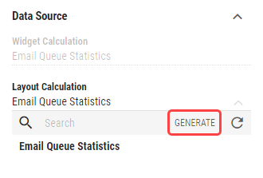

Data Sources¶
- Widget Calculation
Calculation in the widget that will be mapped to the layout calculation.
- Layout Calculation
A layout calculation that will be mapped to selected widget calculation. A calculation can be generated from the widget definition by clicking on button.
Only calculations with the same source tables as the widget calculation can be selected.
- Row Number
Determines the exact row from the calculation that should be passed to widget, based on the order of rows which depends on configured sorting in the shared calculation.
Row Number and Data Filters can be combined.
- Data Filters
This group contains all data filters allowed by widget calculation with option to specify value for each one. In this group, a data filter allowed